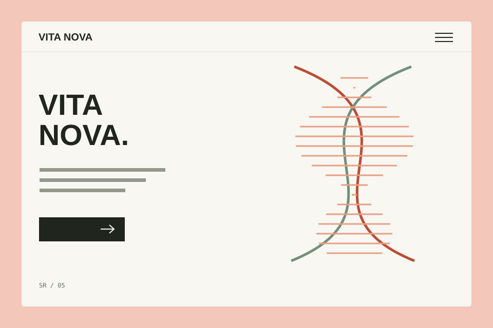

← Все работы05 / 06
Дизайн-концепция / 2026
VITA NOVA
Медицинская клиника
Забота начинается с понятного интерфейса.

Учебная дизайн-концепция. Клиентский запуск и коммерческие показатели не заявляются.
01 / Задача
Помочь найти направление помощи и удобный способ записи.
02 / Подход и структура
Направления → специалисты → вопросы → запись. Контакт доступен на каждом этапе.
03 / Визуальное решение
Крупная типографика, строгая сетка и сдержанная палитра. Забота начинается с понятного интерфейса.
#f3c7b9
#151515
#F5F4EF
04 / На небольшом экране
VITA NOVA ≡
Забота начинается с понятного интерфейса.
05 / Что показывает концепция
Проработаны композиция, иерархия контента и адаптация интерфейса. Изображения показывают направление дизайна, а не готовый клиентский сервис.
Предлагаемая реализация: HTML, CSS, JavaScript. Интеграции и рабочая бизнес-логика — отдельный этап.